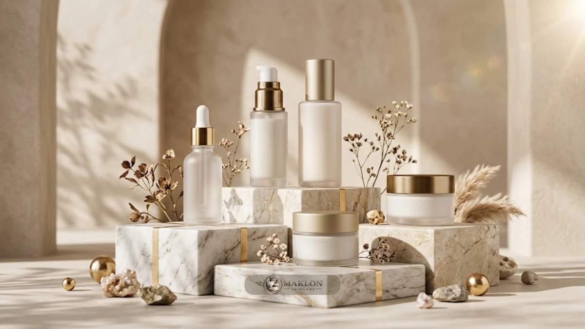
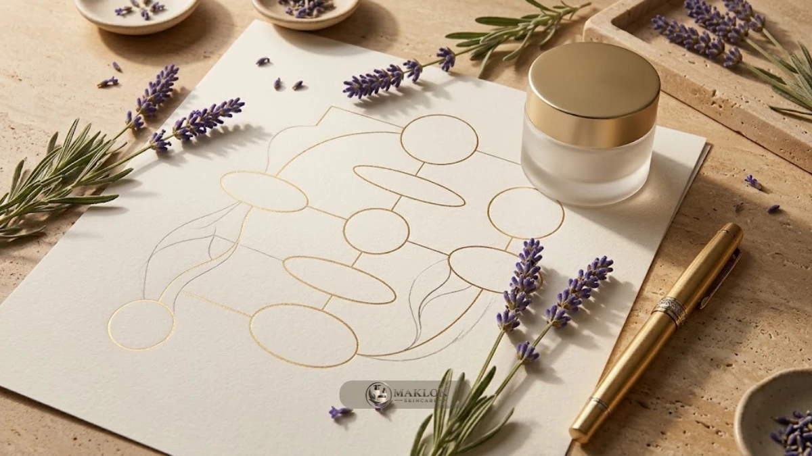

OEM/ODM foundation dan setup bisnis skincare berarti membangun brand kosmetik lewat pabrik maklon skincare berizin, dengan fokus terarah pada legalitas, racikan formula, dan strategi pemasaran, bukan pada investasi mesin pabrikasi.
- BPOM mencatat lebih dari 1.500 pelaku industri kosmetik pada 2025 dengan total notifikasi produk menembus 118.197.
- OEM memproduksi formula milik brand, sedangkan skema ODM menyediakan formula siap pakai yang telah teruji dari pabrik.
- Brand kosmetik tidak wajib memiliki pabrik mandiri, tetapi memegang tanggung jawab penuh atas izin edar dan klaim keamanan.
- Kebutuhan modal maklon bukan sekadar ongkos produksi per botol, melainkan mencakup uji lab, kemasan, legalitas, dan promosi.
- Produk legal berizin resmi belum tentu langsung laris di pasaran; positioning brand dan saluran distribusi menjadi penentu penjualan.
Apa Itu OEM/ODM dalam Bisnis Skincare?
OEM berarti pabrik memproduksi formula milik brand, sedangkan ODM berarti pabrik menyediakan formula siap pakai yang disesuaikan untuk brand tertentu.
OEM adalah singkatan dari Original Equipment Manufacturer. Pada skema ini, pemilik brand membawa konsep serta formulasi skincare custom, lalu pihak pabrik memproduksinya secara massal.
Sementara itu, ODM adalah akronim dari Original Design Manufacturer. Pabrik telah memiliki katalog formula matang, lalu brand memilih, memodifikasi, dan memberi merek dagang sendiri.
Keduanya lazim disebut sebagai kontrak produksi maklon skincare antara pemberi kontrak (pemilik brand) dan penerima kontrak (fasilitas manufaktur).
Model bisnis ini sangat ideal bagi pemula, pelaku UMKM, maupun pemilik brand berpengalaman yang hendak memvalidasi respon pasar tanpa membeli mesin pabrik bernilai miliaran rupiah.
Namun batasannya jelas: brand tidak memegang kendali teknis langsung atas lini produksi, sehingga rekam jejak sertifikasi pabrik dan kejelasan perjanjian kontrak menjadi penentu utama kelangsungan bisnis.
Seberapa Besar Peluang Industri Skincare dan Maklon di Indonesia?
Industri kosmetik di Indonesia terus mencatatkan pertumbuhan yang sangat pesat dalam beberapa tahun terakhir.
Badan Pengawas Obat dan Makanan (BPOM) mendokumentasikan lebih dari 1.500 pelaku industri kosmetik pada 2025, dengan angka notifikasi produk terdaftar mencapai 118.197 pada periode yang sama.
Kementerian Perindustrian menegaskan lebih dari 90 persen dari total pelaku usaha tersebut tergolong ke dalam kategori industri kecil dan menengah (IKM), dengan estimasi nilai pasar kosmetik nasional pada 2025 mendekati 9,74 miliar dolar AS.
Data resmi BPOM yang dihimpun GoodStats memperlihatkan tren peningkatan notifikasi produk kosmetik yang stabil, melonjak dari 83.768 pada 2023 menjadi 115.683 pada 2024, hingga menyentuh 118.197 produk pada 2025.
Tingginya data statistik ini membawa dua sisi penting: peluang permintaan pasar luar biasa luas, namun tingkat persaingan di etalase penjualan juga kian padat.
Perlu dipahami bahwa catatan jumlah pelaku usaha bisa berbeda di antara berbagai rilis publikasi karena perbedaan metode pencatatan data dan rentang waktu survei.
Oleh sebab itu, setiap brand perintis diwajibkan membangun diferensiasi konsep yang kuat dan autentik, alih-alih sekadar mengandalkan status produk yang telah mengantongi izin legal.
Mitos 1: Apakah OEM/ODM Sama dengan Menjiplak Produk Orang Lain?
Tidak sama sekali. OEM dan ODM merupakan model bisnis manufaktur yang sah, diakui secara internasional, serta dilindungi regulasi hukum yang jelas.
Tindakan yang melanggar hukum adalah menjiplak merek dagang terdaftar, mencuri formula tanpa lisensi, atau meniru klaim khasiat kompetitor tanpa bukti pengujian klinis dan notifikasi resmi BPOM.
Faktanya, kontrak manufaktur melalui maklon skincare ODM memakai formula dasar pabrik yang telah teruji aman dan stabil.
Meski memakai basis formula tersebut, pemilik brand tetap memiliki keleluasaan melakukan penyesuaian pada konsentrasi zat aktif, tekstur, aroma alami, serta sentuhan desain kemasan kosmetik yang memikat.
Hal krusial yang wajib dihindari adalah membuat nama produk, desain visual, atau deskripsi manfaat yang sengaja membingungkan konsumen demi mendompleng popularitas brand lain.
Pastikan setiap item skincare memiliki narasi klaim yang dapat dipertanggungjawabkan di hadapan hukum, serta teliti status kepemilikan formula di dalam draf perjanjian kerja sama sebelum proses manufaktur dijalankan.
Mitos 2: Apakah Brand Skincare Harus Punya Pabrik Sendiri?
Sama sekali tidak harus. Pemilik brand kecantikan dapat sepenuhnya bermitra dengan pabrik kosmetik berstandar CPKB resmi melalui mekanisme kontrak produksi.
Dengan skema ini, perintis brand dapat mencurahkan 100 persen energi dan sumber dayanya pada strategi pengembangan konsep produk, penguatan citra merek, dan perluasan jaringan kanal penjualan.
Data Persatuan Perusahaan Kosmetika Indonesia (Perkosmi) menunjukkan bahwa hingga penghujung 2024, jumlah Badan Usaha Pemilik Notifikasi (BUPN) kosmetik di tanah air telah melampaui angka 1.900 entitas.
Angka tersebut mencakup para manufaktur mandiri, importir resmi, hingga ribuan pelaku usaha yang menempuh jalur kontrak produksi bersama pabrik maklon skincare terpercaya.
Kenyataan ini membuktikan bahwa operasional brand skincare tanpa fasilitas pabrik pribadi sudah menjadi praktik bisnis modern yang lazim, efisien, dan menguntungkan.
Kendati demikian, pemilik brand tetap disarankan mempelajari dasar-dasar formulasi dan alur produksi kosmetika.
Pemahaman dasar ini sangat berharga untuk membaca laporan uji laboratorium, mengevaluasi tekstur sampel, serta berdiskusi secara taktis bersama formulator pabrik.
Mitos 3: Apakah Pabrik Maklon Otomatis Mengurus Semua Izin?
Tidak bekerja secara otomatis tanpa keterlibatan aktif pemilik brand.
Pabrik maklon memang berkewajiban menerapkan sertifikasi Cara Pembuatan Kosmetika yang Baik (CPKB) pada lini produksinya, namun pemilik notifikasi tetap memegang tanggung jawab penuh atas mutu, keamanan, kebenaran klaim, dan kepatuhan edar produk di tangan masyarakat.
Berdasarkan regulasi resmi, setiap produk kosmetik yang diedarkan wajib memiliki izin edar sah berupa notifikasi BPOM.
Pakar farmasi dari Universitas Gadjah Mada (UGM) menegaskan bahwa nomor notifikasi BPOM kosmetika memiliki masa berlaku tiga tahun dan wajib diperpanjang secara berkala.
Asosiasi industri kosmetik menekankan bahwa pemilik brand dan pabrik maklon harus membagi porsi tanggung jawab secara proporsional dan tertulis dalam akta perjanjian resmi.
Pada praktiknya, sebagian besar pabrik maklon menyediakan layanan pendampingan pengurusan izin BPOM dan sertifikasi halal untuk memudahkan klien.
Meski demikian, Anda wajib memastikan siapa pihak yang tercatat sebagai pemohon notifikasi, di mana arsip dokumen informasi produk (DIP) disimpan, serta siapa penanggung jawab biaya jika terjadi penarikan produk di pasar.
Mitos 4: Apakah Modal OEM/ODM Pasti Murah?
Tidak selalu demikian, karena kalkulasi modal tidak sekadar dihitung dari harga cetak sediaan per kemasan.
Besaran total modal untuk memulai proyek OEM atau ODM sangat bergantung pada kuantitas minimum pemesanan (MOQ), kompleksitas zat aktif, jenis kemasan primer dan sekunder, biaya registrasi legalitas, serta biaya pemasaran.
Harga produksi per botol dari pihak pabrik hanyalah salah satu pos pengeluaran dalam neraca bisnis.
Komponen biaya lainnya mencakup jasa rancang desain grafis, biaya cetak botol dan dus kemasan, uji stabilitas sediaan laboratorium, pembuatan materi foto katalog, anggaran iklan berbayar, dan stok penyangga.
Pengembangan formula baru pada skema OEM custom umumnya membutuhkan alokasi dana litbang lebih besar dibandingkan memilih formula katalog ODM yang sudah siap pakai.
Oleh sebab itu, susunlah estimasi anggaran secara menyeluruh dengan mengacu pada panduan cara menghitung HPP skincare dan penetapan margin laba.
Selalu siapkan dana cadangan minimal 15 hingga 20 persen untuk mengantisipasi kebutuhan revisi sampel sediaan maupun penyempurnaan desain label.
Mitos 5: Apakah Produk yang Sudah Ber-BPOM Pasti Laku?
Tentu tidak. Notifikasi BPOM adalah tiket masuk legalitas agar produk boleh diperjualbelikan secara sah di wilayah Republik Indonesia, bukan jaminan produk akan otomatis diserbu pembeli.
Tingkat keberhasilan penjualan produk skincare di pasar riil sangat ditentukan oleh ketepatan penentuan target pasar, bukti manfaat nyata, kesesuaian harga, keandalan saluran distribusi, dan tingkat kepercayaan konsumen.
Dengan total 118.197 notifikasi kosmetik yang terdaftar resmi pada tahun 2025, pilihan produk bagi konsumen sangat melimpah ruah.
Sebuah produk perawatan kulit yang tidak memiliki cerita brand yang menarik, tidak menyasar segmen audiens yang spesifik, serta tidak didukung promosi terarah akan sangat sulit bersaing di pasar.
Karena itu, susun strategi penetrasi pemasaran sedini mungkin, bahkan sebelum tahapan formulasi di laboratorium dimulai.
Manfaatkan saluran pemasaran digital, kerja sama konten bersama beauty creator, dan pembentukan komunitas pelanggan untuk membangun reputasi produk baru Anda.
Mitos 6: Apakah Formula ODM Bisa Dijamin Eksklusif?
Tidak dijamin eksklusif secara otomatis.
Secara umum, formula ODM adalah aset intelektual milik laboratorium pabrik maklon, sehingga pabrik memiliki hak untuk menawarkan basis formula tersebut kepada klien lain, kecuali Anda telah menyepakati klausul eksklusivitas resmi.
Tingkat eksklusivitas formula merupakan hasil dari proses negosiasi bisnis, bukan fasilitas bawaan standar.
Bagi pemilik brand yang menghendaki agar formula racikannya tidak diproduksi untuk kompetitor, Anda perlu mencantumkan klausul pembatasan eksklusivitas, durasi waktu proteksi, serta denda pinalti bila terjadi pelanggaran.
Pastikan juga untuk menanyakan apakah hak paten atau salinan komposisi lengkap formula diserahkan kepada brand atau tetap menjadi rahasia dagang pabrik.
Kejelasan status kepemilikan formula ini akan sangat memengaruhi kebebasan brand jika di kemudian hari Anda berencana memindahkan fasilitas produksi ke pabrik lain.
Apa Perbedaan OEM dan ODM dalam Praktik Maklon?
Perbedaan mendasar antara OEM dan ODM terletak pada pihak pemilik formula sediaan.
Skema OEM menggunakan racikan formula yang dibawa atau dirancang eksklusif oleh pihak brand, sedangkan skema ODM memanfaatkan formula matang milik fasilitas pabrik maklon yang disesuaikan mereknya.
Oleh sebab itu, skema ODM umumnya dinilai lebih ringkas, minim hambatan teknis, dan berbiaya awal lebih terjangkau bagi para pemula.
| Aspek Pembanding | OEM (Original Equipment Manufacturer) | ODM (Original Design Manufacturer) |
|---|---|---|
| Pemilik Formula | Brand (Pemberi Kontrak) | Pabrik Maklon (Penerima Kontrak) |
| Kecepatan Memulai | Umumnya lebih lama (butuh R&D formulasi baru) | Umumnya lebih cepat (formula sudah teruji & stabil) |
| Fleksibilitas Formula | Tinggi (bebas kustomisasi zat aktif, tekstur, aroma) | Terbatas pada katalog pilihan formula pabrik |
| Biaya Awal | Umumnya lebih tinggi (ada biaya litbang sampel baru) | Umumnya lebih hemat (memanfaatkan formula matang) |
| Eksklusivitas | Lebih mudah dijaga karena diracik khusus untuk brand | Perlu klausul kontrak khusus untuk hak eksklusivitas |
| Kecocokan Bisnis | Brand dengan konsep formula & pembeda spesifik | Pemula yang ingin segera menguji pasar dengan cepat |
Tabel perbandingan di atas bersifat panduan umum industri kosmetik. Ketentuan teknis di lapangan dapat berbeda bergantung pada kebijakan internal masing-masing pabrik maklon.
Selalu mintalah draf penawaran formal tertulis dari beberapa mitra pabrik sebagai bahan perbandingan objektif sebelum mengambil keputusan final.
Bagaimana Langkah Setup Bisnis Skincare dengan OEM/ODM?
Proses mendirikan bisnis kecantikan melalui skema OEM atau ODM memerlukan disiplin kerja yang teratur dari tahap riset awal hingga barang sampai di gudang penjualan.

Berikut adalah tujuh langkah operasional terstruktur yang wajib Anda tempuh secara bertahap:
- Tentukan target konsumen dan konsep produk: Rumuskan masalah kulit spesifik yang ingin diselesaikan, karakter pembeli ideal, dan perkiraan harga jual ritel yang kompetitif.
- Siapkan legalitas badan usaha: Urus dokumen perizinan dasar termasuk Nomor Induk Berusaha (NIB), identitas pelaku usaha, serta pendaftaran merek dagang (HKI).
- Pilih pabrik maklon terpercaya: Ajukan permintaan sampel sediaan formula seperti maklon serum wajah atau krim pelembap untuk diuji coba langsung.
- Sepakati spesifikasi kontrak dan MOQ: Tentukan jumlah minimum pesanan awal, rincian biaya sediaan, hak kepemilikan formula, dan jangka waktu pengerjaan.
- Jalani uji stabilitas laboratorium: Pastikan formula lolos uji cemaran mikroba dan stabilitas fisik sesuai pedoman standar QC laboratorium skincare.
- Daftarkan notifikasi izin edar: Daftarkan produk ke sistem notifikasi BPOM serta lakukan audit sertifikasi halal untuk menjamin kepatuhan regulasi.
- Mulai produksi massal dan distribusi: Cetak kemasan, lakukan pengisian batch di pabrik, simpan dokumentasi riwayat produksi, lalu luncurkan produk ke pasar.
Bagaimana Cara Memilih Pabrik Maklon yang Tepat?
Memilih fasilitas manufaktur mitra maklon harus didasarkan pada parameter teknis yang objektif, bukan sekadar tergiur tawaran harga yang sangat murah.
Pastikan pabrik memiliki Sertifikat Pemenuhan Aspek CPKB resmi yang diterbitkan oleh instansi BPOM sesuai bentuk sediaan yang ingin Anda buat.
Regulasi BPOM mewajibkan industri kosmetika hanya memproduksi sediaan yang telah tercantum dan disetujui dalam lingkup sertifikat izin operasionalnya.
Sebagai contoh, jika Anda hendak meluncurkan produk tabir surya atau toner penyegar, pastikan bentuk sediaan cairan dan emulsi telah terdaftar dalam sertifikat izin pabrik tersebut.
Mintalah portofolio brand klien yang telah berhasil diproduksi, teliti contoh laporan pengujian laboratorium, serta luangkan waktu untuk meninjau langsung kebersihan fasilitas pabrikasi.
Bandingkan sedikitnya tiga pabrik maklon yang berbeda berdasarkan transparansi formula, fleksibilitas batas MOQ, keramahan layanan, dan ketepatan timeline pengerjaan.
Apa Kesalahan Umum Pemula dalam Skema OEM/ODM?
Kesalahan fatal yang kerap dilakukan pebisnis baru adalah memilih pabrik maklon semata-mata karena pertimbangan harga termurah tanpa memeriksa keabsahan legalitasnya.
Kekeliruan lainnya mencakup melewatkan kontrak perjanjian tertulis yang rinci, meremehkan batasan klaim kosmetik yang diizinkan BPOM, serta baru memikirkan strategi pemasaran saat gudang sudah penuh terisi barang.
Terdapat pula risiko pemula yang tergiur memakai zat aktif berbahaya tanpa izin demi mendapatkan efek perubahan kulit yang instan.
Pada tahun 2025 lalu, BPOM menarik lebih dari 100 produk kosmetik dari peredaran karena terbukti dicemari zat terlarang berbahaya seperti merkuri, hidrokuinon, dan asam retinoat.
Lindungi reputasi bisnis Anda sejak batch perdana dengan memeriksa teliti daftar bahan komposisi, menolak janji khasiat yang berlebihan, serta bermitra hanya dengan pabrik maklon yang menjunjung tinggi etika dan kepatuhan hukum.
Tips Praktis Memulai OEM/ODM Foundation untuk Brand Baru
Langkah paling bijak bagi pemilik brand pemula adalah memulai perjalanan bisnis dengan satu produk unggulan utama (hero product).
Produk hero adalah produk tunggal yang paling efektif menjawab keluhan terbesar target konsumen Anda, misalnya satu varian serum pencerah yang aman atau tabir surya ringan untuk kulit berjerawat.
Uji penerimaan pasar melalui sistem pemesanan awal (pre-order) atau penjualan batch terbatas melalui paket starter maklon skincare sebelum berinvestasi memproduksi banyak varian sekaligus.
Dokumentasikan seluruh riwayat korespondensi, lembar penawaran harga, nota kesepakatan, dan persetujuan sampel sediaan dalam bentuk arsip tertulis yang rapi.
Terakhir, tetapkan indikator performa keberhasilan bisnis sejak awal, seperti persentase pembelian ulang konsumen (repeat order) dan perolehan laba bersih per botol agar ekspansi bisnis Anda senantiasa berbasis data nyata.
Panduan Lanjutan: Checklist, Pemasaran, dan Timeline Produksi
Untuk memastikan proyek maklon kosmetik Anda berjalan tepat waktu dan terhindar dari pemborosan biaya, lengkapi perencanaan Anda dengan panduan teknis pelengkap.
- Checklist teknis pra-proyek OEM/ODM: Menyusun dokumen perizinan, sertifikat kelayakan usaha, formulir brief spesifikasi zat aktif, dan draf kontrak kerja sama.
- Strategi pemasaran digital & distribusi: Merancang narasi positioning, kanal promosi media sosial, rekrutmen mitra reseller, dan pengelolaan penjualan toko online.
- Estimasi waktu dan jadwal timeline produksi: Mengukur durasi fase uji coba sampel, masa tunggu verifikasi BPOM, waktu cetak kemasan, hingga tahapan rilis produk.
Untuk memverifikasi keabsahan izin edar setiap sediaan kosmetik, Anda dapat memanfaatkan portal resmi Cek BPOM secara mandiri melalui internet.
Konsultasi Maklon Skincare Bersertifikat CPKB
Ingin mendirikan brand skincare berizin BPOM dan Halal dengan skema OEM atau ODM yang transparan dan amanah? Diskusikan ide produk, formulasi sampel, serta batas minimum order Anda bersama tim konsultan kami melalui layanan konsultasi maklon skincare sekarang juga.
Kesimpulan: 4 Pilar Setup Bisnis Skincare yang Kokoh
Fondasi setup bisnis skincare yang sehat dan berumur panjang senantiasa bertumpu pada empat pilar fundamental:
- Bekerja sama secara eksklusif dengan fasilitas pabrik manufaktur bersertifikat CPKB resmi.
- Menyepakati kontrak tertulis yang transparan mengenai hak cipta formula, eksklusivitas, dan batas tanggung jawab hukum.
- Menghitung total kebutuhan modal secara riil, mencakup uji mutu laboratorium, kemasan, hingga pos anggaran pemasaran.
- Memulai debut bisnis dari satu hero product terfokus serta menguji respon pasar dalam skala batch kecil.
Mitos paling keliru di dunia kecantikan adalah menganggap pabrik maklon akan mengurus seluruh urusan tanpa andil pemilik brand, atau meyakini bahwa produk yang sudah berizin BPOM akan otomatis laris manis tanpa usaha pemasaran.
Catatan: Artikel ini disajikan sebagai informasi edukasi bisnis kosmetik secara umum dan bukan merupakan nasihat hukum formal. Untuk kepastian regulasi resmi, konsultasikan rencana produk Anda bersama tim regulatory BPOM atau konsultan maklon terpercaya.